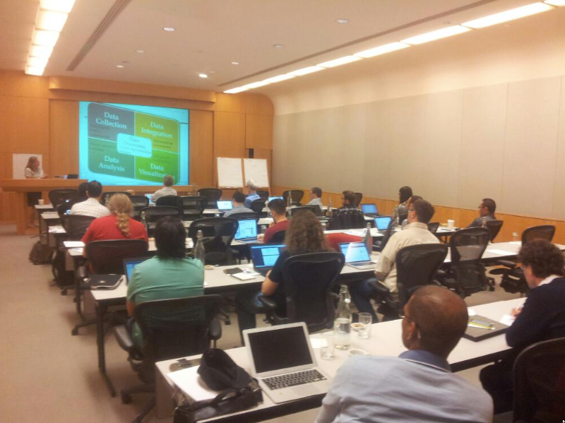

First International Workshop on Capturing Scientific Knowledge
Palisades, NY, USA
http://www.k-cap2015.org/
Contents
- Workshop Goals
- Schedule
- Submissions
- Important Dates
- Organizing Committee
- Program Committee
- Accepted Papers
Workshop Goals
The aim of this workshop is to bring together researchers interested in representing and capturing knowledge about science so that it can be used by intelligent systems to support scientific research and discovery.
From the early days of Artificial Intelligence, researchers have been interested in capturing scientific knowledge to develop intelligent systems for science. There are a variety of formalisms used today in different areas of science. Ontologies are widely used for organizing knowledge, particularly in biology and medicine. Process representations are used to do qualitative reasoning in areas such as physics and chemistry. Probabilistic graphical models are used by machine learning researchers, for example in climate modeling.
In addition to enabling more advanced capabilities for intelligent systems in science, capturing scientific knowledge enables knowledge dissemination and open science practices. This is increasingly more important to enable the reuse of scientific knowledge across scientific disciplines, and beyond that the reuse by businesses and the public.
Although great advances have been made, scientific knowledge is complex and poses great challenges for knowledge capture. This workshop will provide a forum to discuss existing forms of scientific knowledge representation and existing systems that use them, and to envision major areas to augment and expand this important field of research.
The recent emphasis in open science has had a major focus on data sharing but it needs to encompass knowledge as well. There are many research challenges in open sharing and reuse of scientific knowledge that need to be addressed in future research.
Workshop Gallery
Schedule
| 8:00-9:00 | Breakfast and registration |
| 9:00-9:15 | Introductions and overview of the workshop |
| 9:15-10:15 | Paper Presentations (Each 15mins + 5mins for questions)
|
| 10:15-10:30 | Discussion (led by Tim Clark) |
| 10:30-11:00 | -- Break -- |
| 11:00-12:00 | Invited talk (Mark Musen, Stanford University) |
| 12:00-1:30 | -- Lunch -- |
| 1:30-2:30 |
Paper Presentations (Each 15mins + 5mins for questions)
|
| 2:30-3:00 | Discussion (led by Mark Musen) |
| 3:00-3:30 | -- Break -- | 3:30-4:30 |
Paper Presentations (Each 15mins + 5mins for questions)
|
| 4:30-4:40 |
Paper Presentations Continued (Each 10mins)
|
| 4:40-5:30 | Discussion and wrap up (led by Yolanda Gil) |
Submissions
Major topics of interest for this workshop include:
- Successful knowledge capture and representation formalisms are used in a variety of scientific domains, what are their key features and merits?
- Scientific knowledge is inherently complex and requires significant effort to capture. What are effective approaches to model and to acquire scientific knowledge?
- Given the variety of representation formalisms for scientific knowledge, how can they be combined to enable more advanced capabilities?
- What approaches can support the uncertainty and evolution inherent in scientific models?
- What are open challenges for representation and capture of scientific knowledge?
- What scientific breakthroughs would be enabled with improved approaches to capture scientific knowledge?
- What are effective approaches to enable open sharing, dissemination, and reuse of scientific knowledge?
Submissions can be made in the following categories:
- Report papers: Overviews or summaries of past work on approaches to represent and capture scientific knowledge.
- Research papers: Novel results of research on scientific knowledge representation or capture.
- Position papers: Discussion on issues concerning the representation, capture, and dissemination of scientific knowledge, particularly to facilitate cross-disciplinary integrative science.
- Challenge papers: Specific scenarios that describe the benefits to science if the limitations identified are overcome.
Submissions should be up to 6 pages and in the format of the ACM SIG Proceedings template: http://www.acm.org/sigs/publications/proceedings-templates. Submissions should be emailed to sciknow2015@gmail.com.
Accepted papers will be made available on the workshop site.
Important Dates
- Submission deadline: July 24, 2015
- Author notification: August 21, 2015
- Workshop: October 7, 2015
Organizing Committee
- Peter Clark, Allen Institute for AI
- Tim Clark, Harvard University
- Imme Ebert-Uphoff, Colorado State University
- Yolanda Gil, University of Southern California
- Mark Musen, Stanford University
Program Committee
- Richard Boyce, University of Pittsburgh
- Vinay Chaudhri, SRI International
- James Fan
- Daniel Garijo, Polytechnic University of Madrid
- Michael R. Glass, IBM Research
- Ashok Goel, Georgia Institute of Technology
- Andrew Gordon, University of Southern California
- Paul Groth, Elsevier Research
- William Hayes, Selventa
- Derek Sleeman, University of Aberdeen
Accepted Papers
- "Semantic Role Labeling for Process Recognition Questions." Samuel Louvan, Chetan Naik, Veronica Lynn, Ankit Arun, Niranjan Balasubramanian, Stony Brook University; Peter Clark, Allen Institute for Artificial Intelligence.
- "Argument graphs: A New Model of Literature-Data Integration for Robust and Reproducible Science." Tim Clark, Harvard University.
- "Requirements for the Domain Model of Environmental Computational Spreadsheets." Martine de Vos, Jan Wielemaker, Guus Schreiber, VU University Amsterdam; Jan Top, Wageningen University
- "Exploring Synergies between Machine Learning and Knowledge Representation to Capture Scientific Knowledge." Imme Ebert-Uphoff, Colorado State University; Yolanda Gil, University of Southern California.
- "Investigating Cellulose Degradation: Placing Qualitative Reasoning in the Process." Kamal Kansou, INRA; Bert Bredeweg, University of Amsterdam.
- "From Why to How through Knowledge Capture." Kevin Lynch, Randall Ramsey, and George Ball, Raytheon Corporation.
- "Context Aware Recommendation Engine for Metadata Submission." Maryam Panahiazar, Michel Dumontier, and Olivier Gevaert, Stanford University.
- "An Update of the Temporal Discovery Workbench: a Case Study with ICU Patient Datasets." Derek Sleeman and Sam Cauvin, University of Aberdeen; Laura Moss, and John Kinsella, University of Glasgow.
- "Capturing Scientific Knowledge on Medical Risk Factors." Allan Third and John Domingue, Open University; Eleni Kaldoudi, Stefanos Roumeliotis and Kalliopi Pafili, Democritus University of Thrace; George Gkotsis, King's College London.
- "Information Extraction for Scholarly Document Big Data." Jian Wu and C. Lee Giles, Pennsylvania State University.